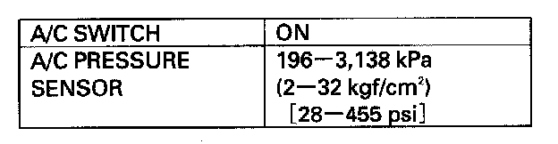
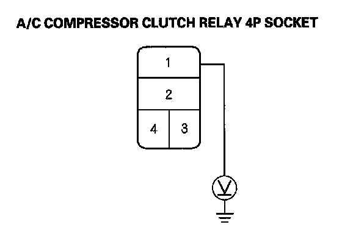
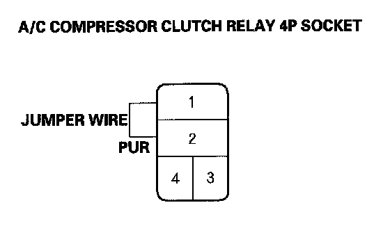
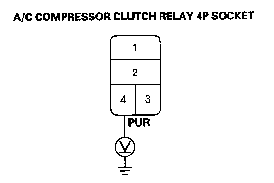
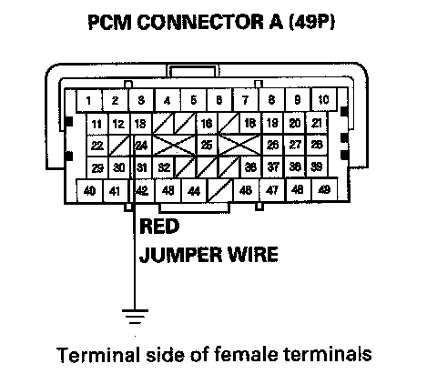
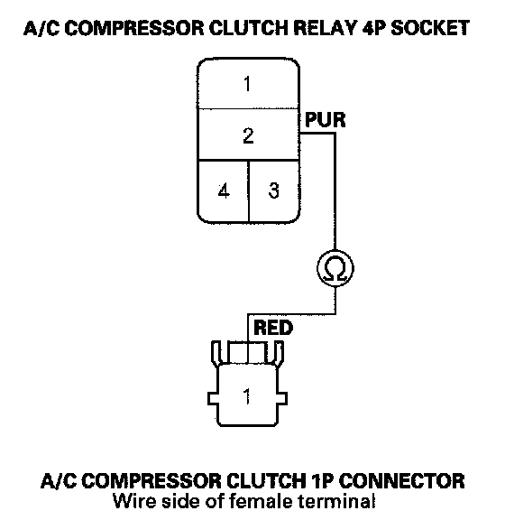

A/C Compressor Clutch Circuit Troubleshooting
A/C Compressor Clutch Circuit TroubleshootingNOTE:
- It is normal for the A/C compressor to turn off under certain conditions, such as low idle, high engine coolant temperature, hard acceleration, or high/low pressure.
- Do not use this troubleshooting procedure if the fans are also inoperative with the A/C on. Refer to the symptom troubleshooting index Symptom Related Diagnostic Procedures.
- Before doing any symptom troubleshooting, check for powertrain DTCs.
1. Check the No. 7 (7.5 A) fuse in the relay block, and the No. 30 (10 A) fuse in the under-dash fuse/relay box.
Are the fuses OK?
YES - Go to step 2.
NO - Replace the fuse(s) and recheck. If the fuse(s) blow again, check for a short in the No. 7 (7.5 A) and No. 30 (10 A) fuse(s) circuit.
2. Connect the HDS to the DLC.
3. Start the engine.
4. Turn on the A/C.
5. Check the A/C CLUTCH in the PGM-FI Data List with the HDS.
Is the A/C CLUTCH on?
YES - Go to step 7.
NO - Go to step 6.

6. Using the HDS, confirm the following values in the PGM-FI Data List at idle.
Are all the values within specifications?
YES - Go to step 7.
NO - Troubleshoot the value that is not within the specifications.
7. Remove the A/C compressor clutch relay from the relay block, and test it.
Is the relay OK?
YES - Go to step 8.
NO - Replace the A/C compressor clutch relay.

8. Measure the voltage between the A/C compressor clutch relay 4P socket terminal No. 1 and body ground.
Is there battery voltage?
YES - Go to step 9.
NO - Replace the relay block.

9. Connect the A/C compressor clutch relay 4P socket terminals No. 1 and No. 2 with a jumper wire.
Does the A/C compressor clutch click?
YES - Go to step 10.
NO - Go to step 19.
10. Disconnect the jumper wire.
11. Turn the ignition switch ON (II).

12. Measure the voltage between the A/C compressor clutch relay 4P socket terminal No. 4 and body ground.
Is there battery voltage?
YES - Go to step 13.
NO - Repair open in the wire between the No. 30 (10 A) fuse in the under-dash fuse/relay box and the A/C compressor clutch relay.
13. Turn the ignition switch OFF.
14. Reinstall the A/C compressor clutch relay.
15. Jump the SCS line with the HDS.
NOTE: This step must be done to protect the powertrain control module (PCM) from damage.
16. Disconnect PCM connector A (49P).

17. Connect PCM connector A (49P) terminal No. 13 to body ground with a jumper wire.
18. Turn the ignition switch ON (II).
Does the A/C compressor click?
YES - Check for loose wires or poor connections at PCM connector A (49P). If the connections are good, check the PCM grounds. If the grounds are good, substitute a known-good PCM, and recheck. If the symptom/indication goes away, replace the original PCM.
NO - Repair open in the wire between the A/C compressor clutch relay and the PCM.
19. Disconnect the jumper wire.
20. Disconnect the A/C compressor clutch 1P connector.

21. Check for continuity between the A/C compressor clutch relay 4P socket terminal No. 2 and the A/C compressor clutch 1P connector terminal No. 1.
Is there continuity?
YES - Check the A/C compressor clutch clearance, and the compressor clutch field coil. Repair as needed.
NO - Repair open in the wire between the A/C compressor clutch relay and the A/C compressor clutch.